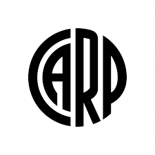
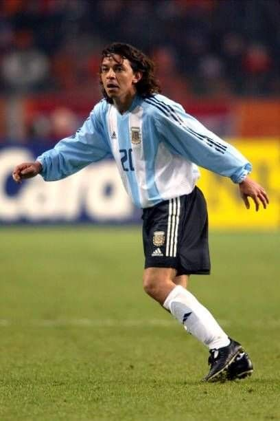
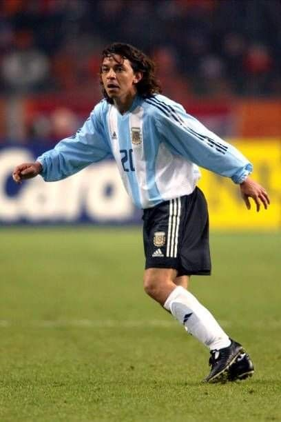
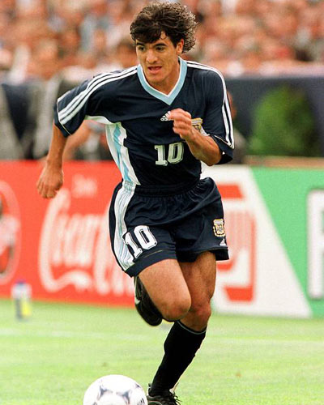
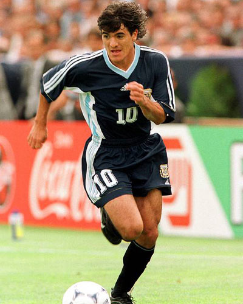
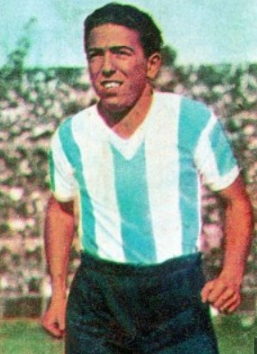
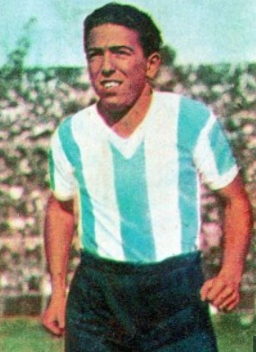
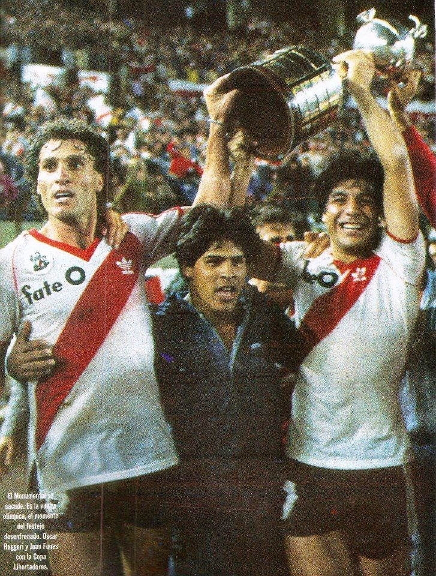

Hola
Esto es River Plate

Historia

Historia de River Plate
River Plate es uno de los clubes de fútbol más importantes de Argentina y de América del Sur. Fundado en 1901 en el barrio de La Boca de Buenos Aires, originalmente se llamaba "Club Atlético River Plate". En sus primeros años, el club tuvo problemas financieros y deportivos, pero en la década de 1930 comenzó su época dorada.
Durante esa década, River Plate ganó cinco títulos de liga y dos copas nacionales, y se convirtió en el equipo más popular de Argentina. Entre los jugadores más destacados de ese período se encontraban Adolfo Pedernera, José Manuel Moreno, Angel Labruna y Felix Loustau, quienes formaron una delantera conocida como "La Máquina".
Desde entonces, River Plate ha seguido siendo uno de los equipos más exitosos de Argentina y América del Sur. Ha ganado numerosos títulos de liga, copas nacionales e internacionales, y ha producido a algunos de los jugadores más talentosos de la historia del fútbol argentino, como Enzo Francescoli, Ariel Ortega, Marcelo Gallardo y Javier Mascherano.
Idolos
 

 

 

Mâs Monumental
Historia del Monumental
En 1933, Antonio Vespucio Liberti asumió como presidente de River y propuso construir el estadio más grande de Argentina en el barrio de Núñez, que compró por
569.403 pesos. Se convocó a un concurso público para el proyecto del estadio, ganado por los arquitectos Aslan y Ezcurra con diseño de Calabria. Se colocó la
primera piedra el 25 de mayo de 1935, y las obras comenzaron el 27 de septiembre de 1936. Primero se construyó la tribuna San Martín, luego la Belgrano y por
último la Centenario.
El Monumental se inauguró el 26 de mayo de 1938 con un partido contra Peñarol. Aunque el proyecto original constaba de cuatro grandes
tribunas, el dinero se acabó y el estadio quedó con forma de herradura. En 1958 se construyó la cuarta tribuna (Sívori) y en 1977 se construyó la tribuna
Almirante Brown alta como parte de los trabajos de remodelación para ser la sede de la Copa del Mundo.
Titulos
Títulos Internacionales de River Plate
- 
Copa Libertadores
Ganada en los años: 1986, 1996, 2015 y 2018

Recopa Sudamericana
Ganada en el año: 2015, 2016, 2019

Supercopa Sudamericana
Ganada en el año: 1997

Intercontinental
Ganada en el año: 1986

Copa interamericana
Ganada en el año: 1987

Copa Sudamericana
Ganada en el año: 2014